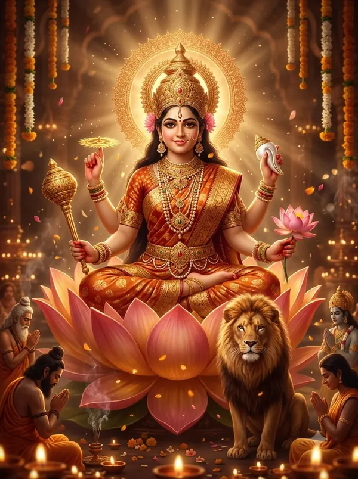

अन्नपूर्णा चालीसा — पूरे बोल और अर्थ
‘नित्य आनंद करिणी माता, वर अरु अभय भाव प्रख्याता’ वाली अन्नपूर्णा चालीसा में सती के देह-त्याग, गिरिजा रूप में तप, ब्रह्मा से वर और काशी की अन्नपूर्णा की महिमा है।
अन्नपूर्णा जयंती (मार्गशीर्ष पूर्णिमा) और रसोई की पूजा में — साथ में अन्नपूर्णा आरती और भोजन मंत्र।

दोहा
विश्वेश्वर पदपदम की, रज निज शीश लगाय। अन्नपूर्णे तव सुयश, बरनौं कवि मतिलाय॥
भगवान विश्वनाथ के चरण-कमलों की धूल सिर पर लगाकर, हे अन्नपूर्णा, मैं अपनी बुद्धि भर आपका सुयश वर्णन करता हूँ।
चौपाई
नित्य आनंद करिणी माता। वर अरु अभय भाव प्रख्याता॥
हे माता, आप सदा आनंद देती हैं; वर और अभय देने के लिए प्रसिद्ध हैं।
जय सौंदर्य सिंधु जग जननी। अखिल पाप हर भव भय हरनी॥
हे सौंदर्य का सागर, जगत-जननी, सारे पाप और संसार का भय हरने वाली, आपकी जय हो।
श्वेत बदन पर श्वेत बसन पुनि। संतन तुव पद सेवत ऋषिमुनि॥
उजले शरीर पर उजले वस्त्र हैं; संत और ऋषि-मुनि आपके चरणों की सेवा करते हैं।
काशी पुराधीश्वरी माता। माहेश्वरी सकल जग त्राता॥
हे काशी नगरी की स्वामिनी माता, माहेश्वरी, सारे जगत की रक्षक।
वृषभारूढ़ नाम रुद्राणी। विश्व विहारिणि जय कल्याणी॥
बैल पर सवार रुद्राणी, विश्व में विचरने वाली कल्याणी, आपकी जय हो।
पतिदेवता सुतीत शिरोमणि। पदवी प्राप्त कीन्ह गिरि नंदिनि॥
हे पर्वत-पुत्री, आपने पतिव्रताओं में शिरोमणि की पदवी पाई।
पति विछोह दुःख सहि नहिं पावा। योग अग्नि तब बदन जरावा॥
(सती रूप में) पति का अपमान और बिछोह सह न सकीं, तब योग-अग्नि से शरीर जला दिया।
देह तजत शिव चरण सनेहू। राखेहु जात हिमगिरि गेहू॥
देह छोड़ते समय भी शिव के चरणों में प्रेम रखा और हिमालय के घर जन्म लिया।
प्रकटी गिरिजा नाम धरायो। अति आनंद भवन मँह छायो॥
आप प्रकट हुईं और गिरिजा नाम पड़ा; घर में बहुत आनंद छा गया।
नारद ने तब तोहिं भरमायहु। ब्याह करन हित पाठ पढ़ायहु॥
तब नारद जी ने आपकी परीक्षा ली और विवाह के लिए सीख दी।
ब्रह्मा वरुण कुबेर गनाये। देवराज आदिक कहि गाये॥
उन्होंने ब्रह्मा, वरुण, कुबेर, इंद्र आदि देवताओं के नाम गिनाए —
सब देवन को सुजस बखानी। मति पलटन की मन मँह ठानी॥
— सब देवताओं का यश बखानकर आपका मन बदलने की ठानी।
अचल रहीं तुम प्रण पर धन्या। कीन्ही सिद्ध हिमाचल कन्या॥
पर हे धन्य हिमाचल-कन्या, आप अपने प्रण पर अटल रहीं और उसे सिद्ध किया।
निज कौ तब नारद घबराये। तब प्रण पूरण मंत्र पढ़ाये॥
तब नारद जी ने प्रण पूरा करने का मंत्र सिखाया।
करन हेतु तप तोहिं उपदेशेउ। संत बचन तुम सत्य परेखेहु॥
उन्होंने तप करने का उपदेश दिया; आपने संत के वचन को सच माना।
गगनगिरा सुनि टरी न टारे। ब्रह्मा तब तुव पास पधारे॥
आकाशवाणी सुनकर भी आप नहीं डिगीं; तब ब्रह्मा जी आपके पास आए।
कहेउ पुत्रि वर माँगु अनूपा। देहुँ आज तुव मति अनुरूपा॥
बोले — ‘हे पुत्री, अनुपम वर माँगो; आज मैं तुम्हारी इच्छा के अनुसार दूँगा।’
तुम तप कीन्ह अलौकिक भारी। कष्ट उठायहु अति सुकुमारी॥
‘तुमने अलौकिक, भारी तप किया; इतनी कोमल होकर भी बहुत कष्ट उठाया।’
अब संदेह छाँड़ि कछु मोसों। है सौगंध नहीं छल तोसों॥
‘अब मुझसे कोई संदेह छोड़ो; सौगंध है, तुमसे कोई छल नहीं।’
करत वेद विद ब्रह्मा जानहु। वचन मोर यह सांचा मानहु॥
‘मुझे वेदों का ज्ञाता ब्रह्मा जानो; मेरी यह बात सच मानो।’
तजि संकोच कहहु निज इच्छा। देहौं मैं मनमानी भिक्षा॥
‘संकोच छोड़कर अपनी इच्छा कहो; मैं मनचाहा वर दूँगा।’
सुनि ब्रह्मा की मधुरी बानी। मुख सों कछु मुसुकाय भवानी॥
ब्रह्मा की मीठी बात सुनकर भवानी थोड़ा मुस्कुराईं।
बोली तुम का कहहु विधाता। तुम तो जग के स्रष्टा धाता॥
बोलीं — ‘हे विधाता, आप क्या कहते हैं! आप तो जगत के रचयिता और पालनकर्ता हैं।’
मम कामना गुप्त नहिं तोंसों। कहवावा चाहहु का मोंसों॥
‘मेरी इच्छा आपसे छिपी नहीं; क्या आप मुझसे कहलवाना चाहते हैं?’
दक्ष यज्ञ महँ मरती बारा। शंभुनाथ पुनि होहिं हमारा॥
‘दक्ष के यज्ञ में देह त्यागते समय (मैंने चाहा था कि) शंभुनाथ फिर मेरे हों।’
सो अब मिलहिं मोहिं मनभाये। कहि तथास्तु विधि धाम सिधाये॥
‘वही मनचाहे शिव अब मुझे मिलें।’ ब्रह्मा ‘तथास्तु’ कहकर अपने धाम गए।
तब गिरिजा शंकर तव भयऊ। फल कामना संशयो गयऊ॥
तब हे गिरिजा, शंकर आपके हुए; कामना फलित हुई, संशय मिट गया।
चन्द्रकोटि रवि कोटि प्रकाशा। तब आनन महँ करत निवासा॥
करोड़ों चंद्रमा और सूर्य का प्रकाश आपके मुख में बसता है।
माला पुस्तक अंकुश सोहै। कर मँह अपर पाश मन मोहै॥
आपके हाथों में माला, पुस्तक, अंकुश और पाश शोभा देकर मन मोहते हैं।
अन्नपूर्णे सदापूर्णे। अज अनवद्य अनंत पूर्णे॥
हे अन्नपूर्णा, सदा पूर्ण रहने वाली, अजन्मा, निर्दोष, अनंत और पूर्ण!
कृपा सागरी क्षेमंकरि माँ। भव विभूति आनंद भरी माँ॥
हे माँ, आप कृपा का सागर, कल्याण करने वाली, संसार की संपदा और आनंद से भरी हैं।
कमल विलोचन विलसित भाले। देवि कालिके चण्डि कराले॥
कमल जैसे नेत्र, चमकता माथा — हे देवी, आप ही कालिका और विकराल चंडी हैं।
तुम कैलास मांहि ह्वै गिरिजा। विलसी आनंद साथ सिंधुजा॥
कैलास में आप गिरिजा हैं और (वैकुंठ में) आनंद से रहने वाली सिंधु-पुत्री लक्ष्मी।
स्वर्ग महालक्ष्मी कहलायी। मर्त्य लोक लक्ष्मी पद पायी॥
स्वर्ग में आप महालक्ष्मी कहलाईं और पृथ्वी पर लक्ष्मी का पद पाया।
विलसी सब मँह सर्व स्वरूपा। सेवत तोहिं अमर पुर भूपा॥
आप सब रूपों में सबमें बसी हैं; स्वर्ग के राजा इंद्र भी आपकी सेवा करते हैं।
जो पढ़िहहिं यह तव चालीसा। फल पाइंहहि शुभ साखी ईसा॥
जो आपकी यह चालीसा पढ़ेंगे, वे शुभ फल पाएँगे — भगवान शिव इसके साक्षी हैं।
प्रात समय जो जन मन लायो। पढ़िहहिं भक्ति सुरुचि अधिकायो॥
जो सुबह मन लगाकर, भक्ति और रुचि से इसे पढ़ेंगे —
स्त्री कलत्र पति मित्र पुत्र युत। परमैश्वर्य लाभ लहि अद्भुत॥
— वे पत्नी, पति, मित्र और पुत्रों सहित अद्भुत ऐश्वर्य पाएँगे।
राज विमुख को राज दिवावै। जस तेरो जन सुजस बढ़ावै॥
आप राज खोए हुए को भी राज दिला देती हैं; आपका यश गाने वाले का यश बढ़ता है।
पाठ महा मुद मंगल दाता। भक्त मनोवांछित निधि पाता॥
यह पाठ महा-आनंद और मंगल देता है; भक्त मनचाही निधि पाता है।
दोहा
जो यह चालीसा सुभग, पढ़ि नावैंगे माथ। तिनके कारज सिद्ध सब, साखी काशी नाथ॥
जो यह सुंदर चालीसा पढ़कर माथा नवाएँगे, उनके सारे काम सिद्ध होंगे — काशीनाथ इसके साक्षी हैं।
अन्नपूर्णा चालीसा का पाठ पूरा हुआ।
किसी अपने को WhatsApp पर भेजेंपाठ पारंपरिक है और अलग-अलग क्षेत्रों में शब्दों में थोड़ा अंतर मिलता है। अर्थ सरल हिंदी में OmKiran Bhakti ने लिखा है। कोई त्रुटि दिखे तो YouTube पर कमेंट करके बताएँ।